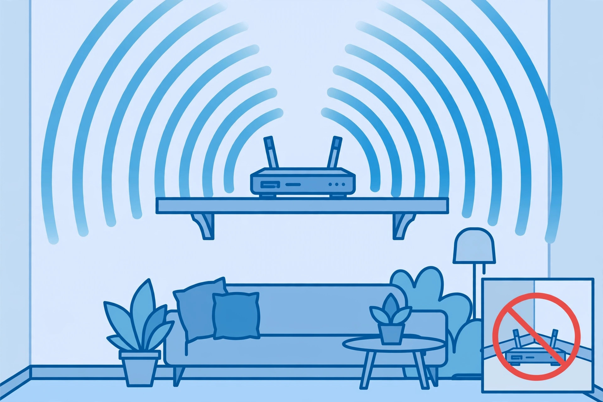
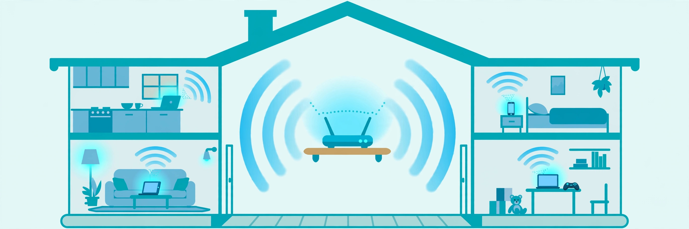
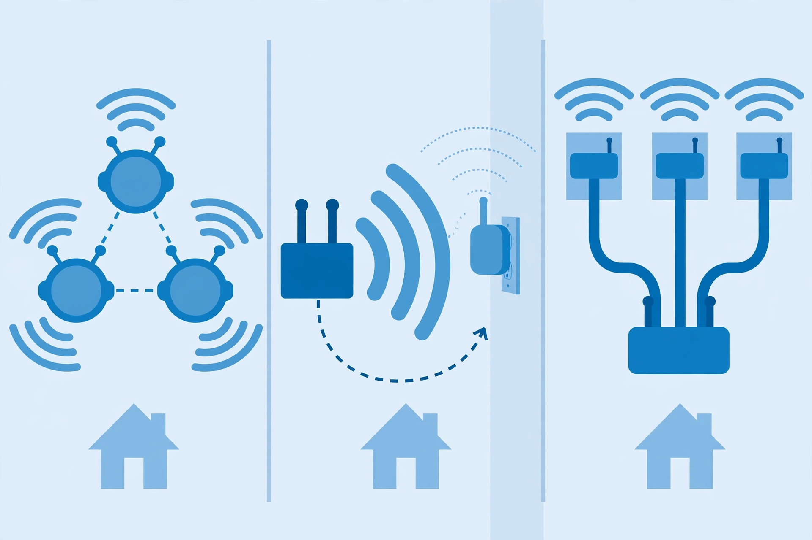
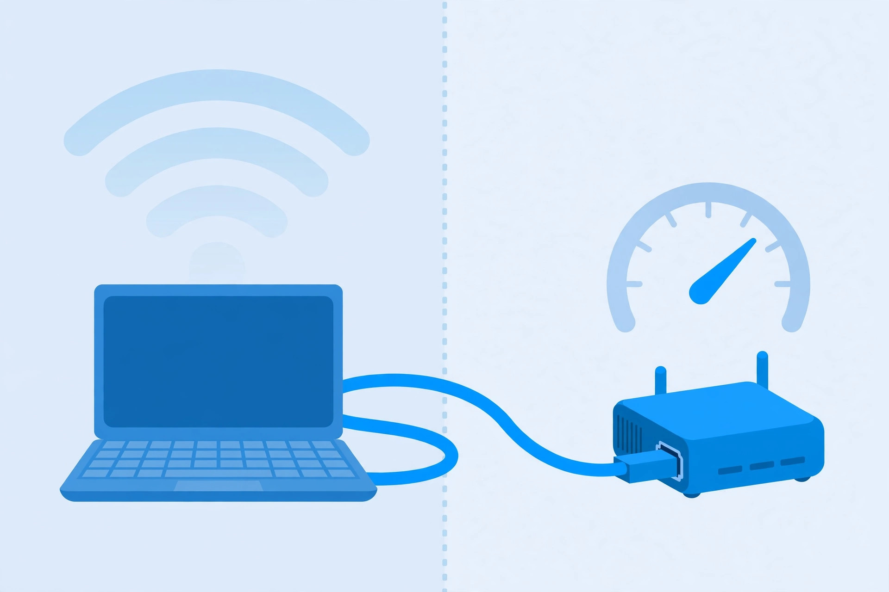
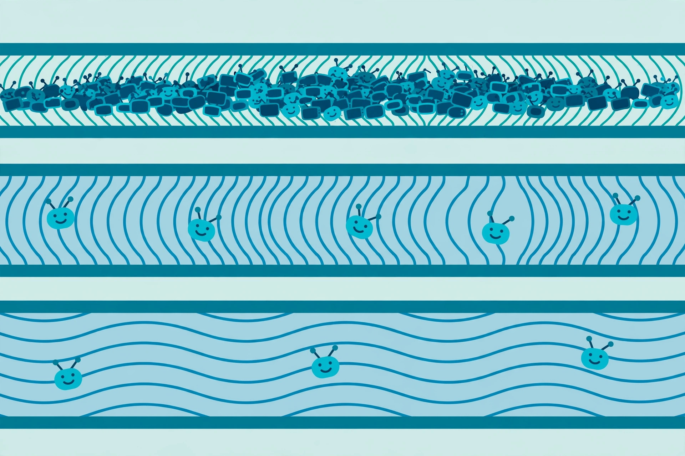

Start here
Router placement that actually matters
The single biggest free Wi-Fi upgrade: central, elevated, and clear of the things that quietly kill signal.
Plain-English fixes for slow, spotty home Wi-Fi

Most home Wi-Fi trouble comes from a handful of causes: a router in the wrong spot, crowded channels, dead zones solved the wrong way, or a speed problem that was never the Wi-Fi at all. These guides walk through each one in plain language, starting with the free fixes.
Before spending a dollar, check the order things usually go wrong: the router's position, the channels it's using, and whether your internet connection itself is the bottleneck. Only when those are sorted does new hardware make sense — and then the choice between mesh, extenders, and access points matters more than the brand on the box.

Start here
The single biggest free Wi-Fi upgrade: central, elevated, and clear of the things that quietly kill signal.

Troubleshooting
Why the 2.4 GHz band is a crowded hallway, the only three channels that don't overlap, and how to pick a quiet one.

Buying decisions
The three ways to kill a dead zone, what each one actually costs you in speed, and which fits your home.

Troubleshooting
Is it your Wi-Fi or your internet? The wired test that answers it in two minutes, plus what to check before you call.

Concepts
What the generation names actually mean, what 6 GHz changes (and doesn't), and whether you should care yet.